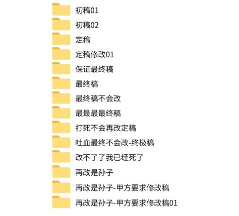
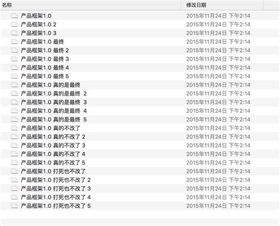

2. Prompt Purpuse
-
A：获得具体问题的具体结果，如：我该学AI还是量子计算？
-
B：固化一套Prompt到程序中，成为系统功能的一部分；
如：每天生成日报，基于公司知识库的问答等； -
A可通过ChatGpt，ChatAll类界面操作，B就需代码，专注后者，因B相对更难；
3. Prompt Tuning


-
找到好的prompt是持续迭代的过程，需不断调优；
-
初稿，修改版，完成版，确定版，最后确定版，终极确定版、最终极确定版，绝对不改版……
-
若知道训练数据是咋样的，那参考训练数据来构造prompt是最好的；
-
你知道他爱看历史剧，就跟他聊历史剧；
-
你知道他是老阿里，就跟他聊阿里黑话，商业互捧；
-
-
不知道训练数据：
-
看Ta是否主动告诉我们，如已知：OpenAI GPT对Markdown友好，Claude对Xml友好；
-
只能不断尝试；尝试是常用方法，有运气因素，故门槛低、落地难；
-
|
4. Prompt Constitution
===
| Entry | Memo |
|---|---|
Instruction |
specific task or instruction model to perform |
Context |
external info or additional context steer model to better response |
Input Data |
input or question we interest to find response for |
Output Indicator |
output type or format |
-
Role 角色：给AI定义最匹配任务的角色，如：你是一个工程师；
非必要，但约定俗成添加，会更有效 -
instruction 指令：对任务进行描述(任务是干什么)；
-
Context 上下文：给出与任务相关的其它北京信息，尤其在多轮交互中；
-
Example例子：必要时给出举例，学术中称为one-shot learning，few shot learning，
或in-context learning，实践证明其对输出正确性有帮助 -
Input 输入：任务的输入信息，在提示词中明确的标识出输入
-
Output 输出：输出的格式描述，以便后继模块自动解析模型的输出结果，如json或xml；
|
https://blog.csdn.net/qq128252/article/details/133775725
https://zhuanlan.zhihu.com/p/619590249
https://zhuanlan.zhihu.com/p/615197354
https://www.lijigang.com/posts/chatgpt-prompt-structure/
https://xie.infoq.cn/article/7b2381b690027b4d9ff18cada
https://www.comet.com/site/blog/prompt-engineering/
https://rajanieshkaushikk.com/2023/06/24/unleashing-the-power-of-azure-openai-and-service-embedding-for-unstructured-document-search/
https://blog.stackademic.com/the-art-of-prompt-engineering-5717ff589226
https://www.analyticsvidhya.com/blog/2023/06/what-is-prompt-engineering/
https://www.visual-design.net/post/llm-prompt-engineering-techniques-for-knowledge-graph
https://zhuanlan.zhihu.com/p/642277430
https://github.com/phodal/prompt-patterns
https://www.53ai.com/news/qianyanjishu/379.html
https://gptpmt.com/foundation/structured
https://juejin.cn/post/7284885060338139155
https://prompt-patterns.phodal.com/design-pattern.analogy2.html
https://prompt-engineering.xiniushu.com/guides/guidelines
角色 指示 上下文 例子 输入 输出
Role Instruction Context Example Input Output